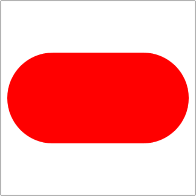
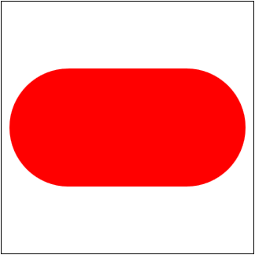
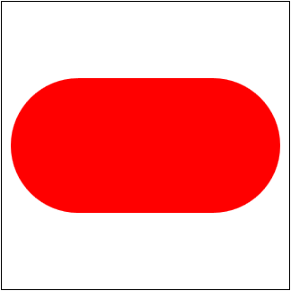

Cada dibujo se puede guardar en un fichero distinto que se puede llamar svg-ficheros-1-B-X-Y.html, donde X es el número de ejercicio e Y el número de dibujo. Las imágenes SVG se muestran con un borde negro. En cada ejercicio se proporciona una plantilla de la página html que indica la porción del plano SVG mostrado en la imagen. En cada ejercicio se proporciona también una imagen con la posición de los ejes. Las figuras se han dibujado siempre en una zona de 300px x 300px con un margen de 10px alrededor, por lo que el tamaño total de la zona visible es de 320px x 320px.
En los ejercicios 1 y 3, la porción del plano SVG visible tiene coordenadas positivas, concretamente entre 0 y 300, y en el ejercicio 2, la porción del plano SVG visible tiene coordenadas tanto negativas como positivas, concretamente entre -150 y 150, como en los ejercicios SVG Ficheros (1).
Cree las imágenes SVG de este ejercicio a partir de la plantilla siguiente. Los valores de la imagen SVG se han elegido para mostrar el primer cuadrante y los ejes de coordenadas. La posición de los ejes se muestra en la imagen siguiente, pero no debe mostrarse en las imágenes del ejercicio.
Escriba tres programas que generen las siguientes imágenes:
El radio del círculo de la segunda imagen no es un valor exacto, se debe ajustar de manera que se muestre aproximadamente tangente al cuadrado.
Los colores empleados en estas imágenes son:
black y
red
SVG Ficheros (1 B) - 2 - Dibujos
Cree las imágenes SVG de este ejercicio a partir de la plantilla siguiente. Los valores de la imagen SVG se han elegido para mostrar los ejes de coordenadas en el centro del dibujo. La posición de los ejes se muestra en la imagen siguiente, pero no debe mostrarse en las imágenes del ejercicio.
Escriba tres programas que generen las siguientes imágenes:

Los colores empleados en estas imágenes son:
black,
blue,
green,
red,
yellow
Ayuda para el tercer dibujo:
El tercer dibujo se puede obtener superponiendo varias figuras elementales (círculos y rectángulos), concretamente dos círculos y un rectángulo.
SVG Ficheros (1 B) - 3 - Dibujos
Cree las imágenes SVG de este ejercicio a partir de la plantilla siguiente. Los valores de la imagen SVG se han elegido para mostrar el primer cuadrante y los ejes de coordenadas. La posición de los ejes se muestra en la imagen siguiente, pero no debe mostrarse en las imágenes del ejercicio.
Escriba tres programas que generen las siguientes imágenes:
Los colores empleados en estas imágenes son:
red,
pink,
blue,
orange,
white,
black.
Ayuda para el primer dibujo:
Cada corazón se puede obtener superponiendo dos círculos y un cuadrado.
Ayuda para el segundo dibujo:
La parte superior de comecocos se puede obtener superponiendo un círculo y un cuadrado. La parte inferior se puede obtener superponiendo cinco círculos al cuadrado anterior.
Ayuda para el tercer dibujo:
El símbolo taoísta Taijitu de los primeros tiempos parece a primera vista formado por seis círculos. Los dos círculos pequeños y los dos intermedios están claros, pero las dos mitades más grandes no se pueden conseguir simplemente con dos círculos: se pueden conseguir con un círculo (negro), un rectángulo (blanco) y una circunferencia (negra).


 
